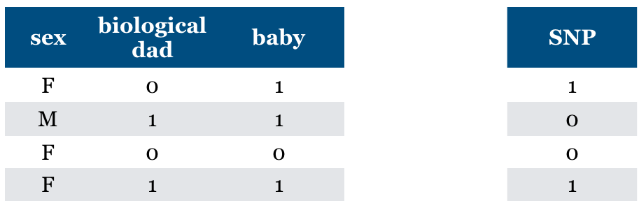

Lecture 4: Feature importances and feature selection#
UBC Master of Data Science program, 2022-23
Instructor: Varada Kolhatkar
Imports and LOs#
Imports#
import os
import string
import sys
from collections import deque
import matplotlib.pyplot as plt
import numpy as np
import pandas as pd
sys.path.append("code/.")
import seaborn as sns
from plotting_functions import *
from sklearn import datasets
from sklearn.compose import ColumnTransformer, make_column_transformer
from sklearn.dummy import DummyRegressor
from sklearn.ensemble import RandomForestRegressor
from sklearn.impute import SimpleImputer
from sklearn.linear_model import Ridge
from sklearn.model_selection import (
cross_val_score,
cross_validate,
train_test_split,
)
from sklearn.pipeline import Pipeline, make_pipeline
from sklearn.preprocessing import OneHotEncoder, OrdinalEncoder, StandardScaler
from sklearn.svm import SVR
from utils import *
%matplotlib inline
Learning outcomes#
From this lecture, students are expected to be able to:
Explain the limitations of simple correlation-based approaches to identify feature importances.
Interpret the coefficients of linear regression, including for scaled numeric features.
Explain the purpose of feature selection.
Discuss and compare different feature selection methods at a high level.
Explain and use model-based feature selection.
Explain recursive feature elimination at a high level.
Use
sklearn’s implementation of recursive feature elimination (RFE).Explain how RFECV (cross-validated recursive feature elimination) works.
Explain forward and backward feature selection at a high level.
Use
sklearn’s implementation of forward and backward selection.
I’m using seaborn in this lecture for easy heatmap plotting, which is not in the course environment. You can install it as follows.
> conda activate 573
> conda install -c anaconda seaborn
import warnings
warnings.simplefilter(action="ignore", category=FutureWarning)
Data#
In the first part of this lecture, we’ll be using Kaggle House Prices dataset, the dataset we used in lecture 10. As usual, to run this notebook you’ll need to download the data. Unzip the data into a subdirectory called data. For this dataset, train and test have already been separated. We’ll be working with the train portion in this lecture.
df = pd.read_csv("data/housing-kaggle/train.csv")
train_df, test_df = train_test_split(df, test_size=0.10, random_state=123)
train_df.head()
| Id | MSSubClass | MSZoning | LotFrontage | LotArea | Street | Alley | LotShape | LandContour | Utilities | ... | PoolArea | PoolQC | Fence | MiscFeature | MiscVal | MoSold | YrSold | SaleType | SaleCondition | SalePrice | |
|---|---|---|---|---|---|---|---|---|---|---|---|---|---|---|---|---|---|---|---|---|---|
| 302 | 303 | 20 | RL | 118.0 | 13704 | Pave | NaN | IR1 | Lvl | AllPub | ... | 0 | NaN | NaN | NaN | 0 | 1 | 2006 | WD | Normal | 205000 |
| 767 | 768 | 50 | RL | 75.0 | 12508 | Pave | NaN | IR1 | Lvl | AllPub | ... | 0 | NaN | NaN | Shed | 1300 | 7 | 2008 | WD | Normal | 160000 |
| 429 | 430 | 20 | RL | 130.0 | 11457 | Pave | NaN | IR1 | Lvl | AllPub | ... | 0 | NaN | NaN | NaN | 0 | 3 | 2009 | WD | Normal | 175000 |
| 1139 | 1140 | 30 | RL | 98.0 | 8731 | Pave | NaN | IR1 | Lvl | AllPub | ... | 0 | NaN | NaN | NaN | 0 | 5 | 2007 | WD | Normal | 144000 |
| 558 | 559 | 60 | RL | 57.0 | 21872 | Pave | NaN | IR2 | HLS | AllPub | ... | 0 | NaN | NaN | NaN | 0 | 8 | 2008 | WD | Normal | 175000 |
5 rows × 81 columns
The prediction task is predicting
SalePricegiven features related to properties.Note that the target is numeric, not categorical.
train_df.shape
(1314, 81)
Let’s separate X and y#
X_train = train_df.drop(columns=["SalePrice"])
y_train = train_df["SalePrice"]
X_test = test_df.drop(columns=["SalePrice"])
y_test = test_df["SalePrice"]
Let’s identify feature types#
drop_features = ["Id"]
numeric_features = [
"BedroomAbvGr",
"KitchenAbvGr",
"LotFrontage",
"LotArea",
"OverallQual",
"OverallCond",
"YearBuilt",
"YearRemodAdd",
"MasVnrArea",
"BsmtFinSF1",
"BsmtFinSF2",
"BsmtUnfSF",
"TotalBsmtSF",
"1stFlrSF",
"2ndFlrSF",
"LowQualFinSF",
"GrLivArea",
"BsmtFullBath",
"BsmtHalfBath",
"FullBath",
"HalfBath",
"TotRmsAbvGrd",
"Fireplaces",
"GarageYrBlt",
"GarageCars",
"GarageArea",
"WoodDeckSF",
"OpenPorchSF",
"EnclosedPorch",
"3SsnPorch",
"ScreenPorch",
"PoolArea",
"MiscVal",
"YrSold",
]
ordinal_features_reg = [
"ExterQual",
"ExterCond",
"BsmtQual",
"BsmtCond",
"HeatingQC",
"KitchenQual",
"FireplaceQu",
"GarageQual",
"GarageCond",
"PoolQC",
]
ordering = [
"Po",
"Fa",
"TA",
"Gd",
"Ex",
] # if N/A it will just impute something, per below
ordering_ordinal_reg = [ordering] * len(ordinal_features_reg)
ordering_ordinal_reg
[['Po', 'Fa', 'TA', 'Gd', 'Ex'],
['Po', 'Fa', 'TA', 'Gd', 'Ex'],
['Po', 'Fa', 'TA', 'Gd', 'Ex'],
['Po', 'Fa', 'TA', 'Gd', 'Ex'],
['Po', 'Fa', 'TA', 'Gd', 'Ex'],
['Po', 'Fa', 'TA', 'Gd', 'Ex'],
['Po', 'Fa', 'TA', 'Gd', 'Ex'],
['Po', 'Fa', 'TA', 'Gd', 'Ex'],
['Po', 'Fa', 'TA', 'Gd', 'Ex'],
['Po', 'Fa', 'TA', 'Gd', 'Ex']]
ordinal_features_oth = [
"BsmtExposure",
"BsmtFinType1",
"BsmtFinType2",
"Functional",
"Fence",
]
ordering_ordinal_oth = [
["NA", "No", "Mn", "Av", "Gd"],
["NA", "Unf", "LwQ", "Rec", "BLQ", "ALQ", "GLQ"],
["NA", "Unf", "LwQ", "Rec", "BLQ", "ALQ", "GLQ"],
["Sal", "Sev", "Maj2", "Maj1", "Mod", "Min2", "Min1", "Typ"],
["NA", "MnWw", "GdWo", "MnPrv", "GdPrv"],
]
categorical_features = list(
set(X_train.columns)
- set(numeric_features)
- set(ordinal_features_reg)
- set(ordinal_features_oth)
- set(drop_features)
)
categorical_features
['LotConfig',
'Alley',
'MiscFeature',
'LotShape',
'RoofStyle',
'Electrical',
'Foundation',
'RoofMatl',
'Exterior2nd',
'Exterior1st',
'LandContour',
'Utilities',
'MasVnrType',
'SaleCondition',
'CentralAir',
'MoSold',
'Condition2',
'BldgType',
'GarageType',
'GarageFinish',
'LandSlope',
'HouseStyle',
'MSZoning',
'Condition1',
'Neighborhood',
'MSSubClass',
'PavedDrive',
'Street',
'Heating',
'SaleType']
from sklearn.compose import ColumnTransformer, make_column_transformer
numeric_transformer = make_pipeline(SimpleImputer(strategy="median"), StandardScaler())
ordinal_transformer_reg = make_pipeline(
SimpleImputer(strategy="most_frequent"),
OrdinalEncoder(categories=ordering_ordinal_reg),
)
ordinal_transformer_oth = make_pipeline(
SimpleImputer(strategy="most_frequent"),
OrdinalEncoder(categories=ordering_ordinal_oth),
)
categorical_transformer = make_pipeline(
SimpleImputer(strategy="constant", fill_value="missing"),
OneHotEncoder(handle_unknown="ignore", sparse=False),
)
preprocessor = make_column_transformer(
("drop", drop_features),
(numeric_transformer, numeric_features),
(ordinal_transformer_reg, ordinal_features_reg),
(ordinal_transformer_oth, ordinal_features_oth),
(categorical_transformer, categorical_features),
)
preprocessor.fit(X_train)
preprocessor.named_transformers_
{'drop': 'drop',
'pipeline-1': Pipeline(steps=[('simpleimputer', SimpleImputer(strategy='median')),
('standardscaler', StandardScaler())]),
'pipeline-2': Pipeline(steps=[('simpleimputer', SimpleImputer(strategy='most_frequent')),
('ordinalencoder',
OrdinalEncoder(categories=[['Po', 'Fa', 'TA', 'Gd', 'Ex'],
['Po', 'Fa', 'TA', 'Gd', 'Ex'],
['Po', 'Fa', 'TA', 'Gd', 'Ex'],
['Po', 'Fa', 'TA', 'Gd', 'Ex'],
['Po', 'Fa', 'TA', 'Gd', 'Ex'],
['Po', 'Fa', 'TA', 'Gd', 'Ex'],
['Po', 'Fa', 'TA', 'Gd', 'Ex'],
['Po', 'Fa', 'TA', 'Gd', 'Ex'],
['Po', 'Fa', 'TA', 'Gd', 'Ex'],
['Po', 'Fa', 'TA', 'Gd', 'Ex']]))]),
'pipeline-3': Pipeline(steps=[('simpleimputer', SimpleImputer(strategy='most_frequent')),
('ordinalencoder',
OrdinalEncoder(categories=[['NA', 'No', 'Mn', 'Av', 'Gd'],
['NA', 'Unf', 'LwQ', 'Rec', 'BLQ',
'ALQ', 'GLQ'],
['NA', 'Unf', 'LwQ', 'Rec', 'BLQ',
'ALQ', 'GLQ'],
['Sal', 'Sev', 'Maj2', 'Maj1',
'Mod', 'Min2', 'Min1', 'Typ'],
['NA', 'MnWw', 'GdWo', 'MnPrv',
'GdPrv']]))]),
'pipeline-4': Pipeline(steps=[('simpleimputer',
SimpleImputer(fill_value='missing', strategy='constant')),
('onehotencoder',
OneHotEncoder(handle_unknown='ignore', sparse=False))])}
ohe_columns = list(
preprocessor.named_transformers_["pipeline-4"]
.named_steps["onehotencoder"]
.get_feature_names(categorical_features)
)
new_columns = (
numeric_features + ordinal_features_reg + ordinal_features_oth + ohe_columns
)
X_train_enc = pd.DataFrame(
preprocessor.transform(X_train), index=X_train.index, columns=new_columns
)
X_train_enc
| BedroomAbvGr | KitchenAbvGr | LotFrontage | LotArea | OverallQual | OverallCond | YearBuilt | YearRemodAdd | MasVnrArea | BsmtFinSF1 | ... | Heating_Wall | SaleType_COD | SaleType_CWD | SaleType_Con | SaleType_ConLD | SaleType_ConLI | SaleType_ConLw | SaleType_New | SaleType_Oth | SaleType_WD | |
|---|---|---|---|---|---|---|---|---|---|---|---|---|---|---|---|---|---|---|---|---|---|
| 302 | 0.154795 | -0.222647 | 2.312501 | 0.381428 | 0.663680 | -0.512408 | 0.993969 | 0.840492 | 0.269972 | -0.961498 | ... | 0.0 | 0.0 | 0.0 | 0.0 | 0.0 | 0.0 | 0.0 | 0.0 | 0.0 | 1.0 |
| 767 | 1.372763 | -0.222647 | 0.260890 | 0.248457 | -0.054669 | 1.285467 | -1.026793 | 0.016525 | -0.573129 | 0.476092 | ... | 0.0 | 0.0 | 0.0 | 0.0 | 0.0 | 0.0 | 0.0 | 0.0 | 0.0 | 1.0 |
| 429 | 0.154795 | -0.222647 | 2.885044 | 0.131607 | -0.054669 | -0.512408 | 0.563314 | 0.161931 | -0.573129 | 1.227559 | ... | 0.0 | 0.0 | 0.0 | 0.0 | 0.0 | 0.0 | 0.0 | 0.0 | 0.0 | 1.0 |
| 1139 | 0.154795 | -0.222647 | 1.358264 | -0.171468 | -0.773017 | -0.512408 | -1.689338 | -1.679877 | -0.573129 | 0.443419 | ... | 0.0 | 0.0 | 0.0 | 0.0 | 0.0 | 0.0 | 0.0 | 0.0 | 0.0 | 1.0 |
| 558 | 0.154795 | -0.222647 | -0.597924 | 1.289541 | 0.663680 | -0.512408 | 0.828332 | 0.598149 | -0.573129 | 0.354114 | ... | 0.0 | 0.0 | 0.0 | 0.0 | 0.0 | 0.0 | 0.0 | 0.0 | 0.0 | 1.0 |
| ... | ... | ... | ... | ... | ... | ... | ... | ... | ... | ... | ... | ... | ... | ... | ... | ... | ... | ... | ... | ... | ... |
| 1041 | 1.372763 | -0.222647 | -0.025381 | -0.127107 | -0.054669 | 2.184405 | -0.165485 | 0.743555 | 0.843281 | -0.090231 | ... | 0.0 | 0.0 | 0.0 | 0.0 | 0.0 | 0.0 | 0.0 | 0.0 | 0.0 | 1.0 |
| 1122 | 0.154795 | -0.222647 | -0.025381 | -0.149788 | -1.491366 | -2.310284 | -0.496757 | -1.389065 | -0.573129 | -0.961498 | ... | 0.0 | 1.0 | 0.0 | 0.0 | 0.0 | 0.0 | 0.0 | 0.0 | 0.0 | 0.0 |
| 1346 | 0.154795 | -0.222647 | -0.025381 | 1.168244 | 0.663680 | 1.285467 | -0.099230 | 0.888961 | -0.573129 | -0.314582 | ... | 0.0 | 0.0 | 0.0 | 0.0 | 0.0 | 0.0 | 0.0 | 0.0 | 0.0 | 1.0 |
| 1406 | -1.063173 | -0.222647 | 0.022331 | -0.203265 | -0.773017 | 1.285467 | 0.033279 | 1.082835 | -0.573129 | 0.467379 | ... | 0.0 | 0.0 | 0.0 | 0.0 | 0.0 | 0.0 | 0.0 | 0.0 | 0.0 | 1.0 |
| 1389 | 0.154795 | -0.222647 | -0.454788 | -0.475099 | -0.054669 | 0.386530 | -0.993666 | -1.679877 | -0.573129 | -0.144686 | ... | 0.0 | 0.0 | 0.0 | 0.0 | 0.0 | 0.0 | 0.0 | 0.0 | 0.0 | 1.0 |
1314 rows × 263 columns
X_train_enc.shape
(1314, 263)
lr_pipe = make_pipeline(preprocessor, Ridge())
scores = cross_validate(lr_pipe, X_train, y_train, return_train_score=True)
pd.DataFrame(scores)
| fit_time | score_time | test_score | train_score | |
|---|---|---|---|---|
| 0 | 0.037688 | 0.006314 | 0.834450 | 0.916827 |
| 1 | 0.033185 | 0.006056 | 0.810031 | 0.919218 |
| 2 | 0.018007 | 0.004891 | 0.831653 | 0.912397 |
| 3 | 0.020183 | 0.004715 | 0.843537 | 0.914043 |
| 4 | 0.017457 | 0.004584 | 0.548802 | 0.920476 |
Feature importances#
How does the output depend upon the input?
How do the predictions change as a function of a particular feature?
If the model is bad interpretability does not make sense.
SimpleFeature correlations#
Let’s look at the correlations between various features with other features and the target in our encoded data (first row/column).
In simple terms here is how you can interpret correlations between two variables \(X\) and \(Y\):
If \(Y\) goes up when \(X\) goes up, we say \(X\) and \(Y\) are positively correlated.
If \(Y\) goes down when \(X\) goes up, we say \(X\) and \(Y\) are negatively correlated.
If \(Y\) is unchanged when \(X\) changes, we say \(X\) and \(Y\) are uncorrelated.
Let’s examine the correlations among different columns, including the target column.
cor = pd.concat((y_train, X_train_enc), axis=1).iloc[:, :10].corr()
plt.figure(figsize=(8, 6))
sns.set(font_scale=0.8)
sns.heatmap(cor, annot=True, cmap=plt.cm.Blues);
We can immediately see that
SalePriceis highly correlated withOverallQual.This is an early hint that
OverallQualis a useful feature in predictingSalePrice.However, this approach is extremely simplistic.
It only looks at each feature in isolation.
It only looks at linear associations:
What if
SalePriceis high whenBsmtFullBathis 2 or 3, but low when it’s 0, 1, or 4? They might seem uncorrelated.
cor = pd.concat((y_train, X_train_enc), axis=1).iloc[:, 10:15].corr()
plt.figure(figsize=(4, 4))
sns.set(font_scale=0.8)
sns.heatmap(cor, annot=True, cmap=plt.cm.Blues);
Looking at this diagram also tells us the relationship between features.
For example,
1stFlrSFandTotalBsmtSFare highly correlated.Do we need both of them?
If our model says
1stFlrSFis very important andTotalBsmtSFis very unimportant, do we trust those values?Maybe
TotalBsmtSFonly “becomes important” if1stFlrSFis removed.Sometimes the opposite happens: a feature only becomes important if another feature is added.
Feature importances in linear models#
With linear regression we can look at the coefficients for each feature.
Overall idea: predicted price = intercept + \(\sum_i\) coefficient i \(\times\) feature i.
lr = make_pipeline(preprocessor, Ridge())
lr.fit(X_train, y_train);
Let’s look at the coefficients.
lr_coefs = pd.DataFrame(
data=lr.named_steps["ridge"].coef_, index=new_columns, columns=["Coefficient"]
)
lr_coefs.head(20)
| Coefficient | |
|---|---|
| BedroomAbvGr | -3723.741570 |
| KitchenAbvGr | -4580.204576 |
| LotFrontage | -1578.664421 |
| LotArea | 5109.356718 |
| OverallQual | 12487.561839 |
| OverallCond | 4855.535334 |
| YearBuilt | 4226.684842 |
| YearRemodAdd | 324.664715 |
| MasVnrArea | 5251.325210 |
| BsmtFinSF1 | 3667.172851 |
| BsmtFinSF2 | 583.114880 |
| BsmtUnfSF | -1266.614671 |
| TotalBsmtSF | 2751.084018 |
| 1stFlrSF | 6736.788904 |
| 2ndFlrSF | 13409.901084 |
| LowQualFinSF | -448.424132 |
| GrLivArea | 15988.182407 |
| BsmtFullBath | 2299.227266 |
| BsmtHalfBath | 500.169112 |
| FullBath | 2831.811467 |
Let’s try to interpret coefficients for different types of features.
Ordinal features#
The ordinal features are easiest to interpret.
print(ordinal_features_reg)
['ExterQual', 'ExterCond', 'BsmtQual', 'BsmtCond', 'HeatingQC', 'KitchenQual', 'FireplaceQu', 'GarageQual', 'GarageCond', 'PoolQC']
lr_coefs.loc["ExterQual"]
Coefficient 4195.671512
Name: ExterQual, dtype: float64
Increasing by one category of exterior quality (e.g. good -> excellent) increases the predicted price by \(\sim\$4195\).
Wow, that’s a lot!
Remember this is just what the model has learned. It doesn’t tell us how the world works.
one_example = X_test[:1]
one_example[["ExterQual"]]
| ExterQual | |
|---|---|
| 147 | Gd |
Let’s perturb the example and change ExterQual to Ex.
one_example_perturbed = one_example.copy()
one_example_perturbed["ExterQual"] = "Ex" # Change Gd to Ex
one_example_perturbed[["ExterQual"]]
| ExterQual | |
|---|---|
| 147 | Ex |
How does the prediction change after changing ExterQual from Gd to Ex?
print("Prediction on the original example: ", lr.predict(one_example))
print("Prediction on the perturbed example: ", lr.predict(one_example_perturbed))
print(
"After changing ExterQual from Gd to Ex increased the prediction by: ",
lr.predict(one_example_perturbed) - lr.predict(one_example),
)
Prediction on the original example: [224795.63596803]
Prediction on the perturbed example: [228991.30748049]
After changing ExterQual from Gd to Ex increased the prediction by: [4195.67151247]
That’s exactly the learned coefficient for ExterQual!
lr_coefs.loc["ExterQual"]
Coefficient 4195.671512
Name: ExterQual, dtype: float64
So our interpretation is correct!
Increasing by one category of exterior quality (e.g. good -> excellent) increases the predicted price by \(\sim\$4195\).
Categorical features#
What about the categorical features?
We have created a number of columns for each category with OHE and each category gets it’s own coefficient.
print(categorical_features)
['LotConfig', 'Alley', 'MiscFeature', 'LotShape', 'RoofStyle', 'Electrical', 'Foundation', 'RoofMatl', 'Exterior2nd', 'Exterior1st', 'LandContour', 'Utilities', 'MasVnrType', 'SaleCondition', 'CentralAir', 'MoSold', 'Condition2', 'BldgType', 'GarageType', 'GarageFinish', 'LandSlope', 'HouseStyle', 'MSZoning', 'Condition1', 'Neighborhood', 'MSSubClass', 'PavedDrive', 'Street', 'Heating', 'SaleType']
lr_coefs_landslope = lr_coefs[lr_coefs.index.str.startswith("LandSlope")]
lr_coefs_landslope
| Coefficient | |
|---|---|
| LandSlope_Gtl | 457.197456 |
| LandSlope_Mod | 7420.208381 |
| LandSlope_Sev | -7877.405837 |
We can talk about switching from one of these categories to another by picking a “reference” category:
lr_coefs_landslope - lr_coefs_landslope.loc["LandSlope_Gtl"]
| Coefficient | |
|---|---|
| LandSlope_Gtl | 0.000000 |
| LandSlope_Mod | 6963.010925 |
| LandSlope_Sev | -8334.603292 |
If you change the category from
LandSlope_GtltoLandSlope_Modthe prediction price goes up by \(\sim\$6963\)If you change the category from
LandSlope_GtltoLandSlope_Sevthe prediction price goes down by \(\sim\$8334\)
Note that this might not make sense in the real world but this is what our model decided to learn given this small amount of data.
one_example = X_test[:1]
one_example[['LandSlope']]
| LandSlope | |
|---|---|
| 147 | Gtl |
Let’s perturb the example and change LandSlope to Mod.
one_example_perturbed = one_example.copy()
one_example_perturbed["LandSlope"] = "Mod" # Change Gd to Ex
one_example_perturbed[["LandSlope"]]
| LandSlope | |
|---|---|
| 147 | Mod |
How does the prediction change after changing LandSlope from Gtl to Mod?
print("Prediction on the original example: ", lr.predict(one_example))
print("Prediction on the perturbed example: ", lr.predict(one_example_perturbed))
print(
"After changing ExterQual from Gd to Ex increased the prediction by: ",
lr.predict(one_example_perturbed) - lr.predict(one_example),
)
Prediction on the original example: [224795.63596803]
Prediction on the perturbed example: [231758.64689313]
After changing ExterQual from Gd to Ex increased the prediction by: [6963.0109251]
Our interpretation above is correct!
lr_coefs.sort_values(by="Coefficient")
| Coefficient | |
|---|---|
| RoofMatl_ClyTile | -191129.774314 |
| Condition2_PosN | -105552.840565 |
| Heating_OthW | -27260.681308 |
| MSZoning_C (all) | -21990.746193 |
| Exterior1st_ImStucc | -19393.964621 |
| ... | ... |
| PoolQC | 34217.656047 |
| RoofMatl_CompShg | 36525.980874 |
| Neighborhood_NridgHt | 37532.643270 |
| Neighborhood_StoneBr | 39993.978324 |
| RoofMatl_WdShngl | 83646.711008 |
263 rows × 1 columns
For example, the above coefficient says that “If the roof is made of clay or tile, the predicted price is \$191K less”?
Do we believe these interpretations??
Do we believe this is how the predictions are being computed? Yes.
Do we believe that this is how the world works? No.
Note
If you did drop='first' (we didn’t) then you already have a reference class, and all the values are with respect to that one. The interpretation depends on whether we did drop='first', hence the hassle.
Interpreting coefficients of numeric features#
Let’s look at coefficients of PoolArea, LotFrontage, LotArea.
lr_coefs.loc[["PoolArea", "LotFrontage", "LotArea"]]
| Coefficient | |
|---|---|
| PoolArea | 2822.370476 |
| LotFrontage | -1578.664421 |
| LotArea | 5109.356718 |
Intuition:
Tricky because numeric features are scaled!
Increasing
PoolAreaby 1 scaled unit increases the predicted price by \(\sim\$2822\).Increasing
LotAreaby 1 scaled unit increases the predicted price by \(\sim\$5109\).Increasing
LotFrontageby 1 scaled unit decreases the predicted price by \(\sim\$1578\).
Does that sound reasonable?
For
PoolAreaandLotArea, yes.For
LotFrontage, that’s surprising. Something positive would have made more sense?
It might be the case that LotFrontage is correlated with some other variable, which might have a larger positive coefficient.
BTW, let’s make sure the predictions behave as expected:
Example showing how can we interpret coefficients of scaled features.#
What’s one scaled unit for
LotArea?The scaler subtracted the mean and divided by the standard deviation.
The division actually changed the scale!
For the unit conversion, we don’t care about the subtraction, but only the scaling.
scaler = preprocessor.named_transformers_["pipeline-1"]["standardscaler"]
lr_scales = pd.DataFrame(
data=np.sqrt(scaler.var_), index=numeric_features, columns=["Scale"]
)
lr_scales.head()
| Scale | |
|---|---|
| BedroomAbvGr | 0.821040 |
| KitchenAbvGr | 0.218760 |
| LotFrontage | 20.959139 |
| LotArea | 8994.471032 |
| OverallQual | 1.392082 |
It seems like
LotAreawas divided by 8994.471032 sqft.
lr_coefs.loc[["LotArea"]]
| Coefficient | |
|---|---|
| LotArea | 5109.356718 |
The coefficient tells us that if we increase the scaled
LotAreaby one scaled unit the price would go up by \(\approx\$5109\).One scaled unit represents \(\sim 8994\) sqft in the original scale.
Let’s examine whether this behaves as expected.
X_test_enc = pd.DataFrame(
preprocessor.transform(X_test), index=X_test.index, columns=new_columns
)
one_ex_preprocessed = X_test_enc[:1]
one_ex_preprocessed
| BedroomAbvGr | KitchenAbvGr | LotFrontage | LotArea | OverallQual | OverallCond | YearBuilt | YearRemodAdd | MasVnrArea | BsmtFinSF1 | ... | Heating_Wall | SaleType_COD | SaleType_CWD | SaleType_Con | SaleType_ConLD | SaleType_ConLI | SaleType_ConLw | SaleType_New | SaleType_Oth | SaleType_WD | |
|---|---|---|---|---|---|---|---|---|---|---|---|---|---|---|---|---|---|---|---|---|---|
| 147 | 0.154795 | -0.222647 | -0.025381 | -0.085415 | 0.66368 | -0.512408 | 0.993969 | 0.792023 | 0.438592 | -0.961498 | ... | 0.0 | 0.0 | 0.0 | 0.0 | 0.0 | 0.0 | 0.0 | 0.0 | 0.0 | 1.0 |
1 rows × 263 columns
orig_pred = lr.named_steps["ridge"].predict(one_ex_preprocessed)
orig_pred
/Users/kvarada/opt/miniconda3/envs/573/lib/python3.10/site-packages/sklearn/base.py:443: UserWarning: X has feature names, but Ridge was fitted without feature names
warnings.warn(
array([224795.63596803])
one_ex_preprocessed_perturbed = one_ex_preprocessed.copy()
one_ex_preprocessed_perturbed["LotArea"] += 1 # we are adding one to the scaled LotArea
one_ex_preprocessed_perturbed
| BedroomAbvGr | KitchenAbvGr | LotFrontage | LotArea | OverallQual | OverallCond | YearBuilt | YearRemodAdd | MasVnrArea | BsmtFinSF1 | ... | Heating_Wall | SaleType_COD | SaleType_CWD | SaleType_Con | SaleType_ConLD | SaleType_ConLI | SaleType_ConLw | SaleType_New | SaleType_Oth | SaleType_WD | |
|---|---|---|---|---|---|---|---|---|---|---|---|---|---|---|---|---|---|---|---|---|---|
| 147 | 0.154795 | -0.222647 | -0.025381 | 0.914585 | 0.66368 | -0.512408 | 0.993969 | 0.792023 | 0.438592 | -0.961498 | ... | 0.0 | 0.0 | 0.0 | 0.0 | 0.0 | 0.0 | 0.0 | 0.0 | 0.0 | 1.0 |
1 rows × 263 columns
We are expecting an increase of $5109.35671809 in the prediction compared to the original value of LotArea.
perturbed_pred = lr.named_steps["ridge"].predict(one_ex_preprocessed_perturbed)
/Users/kvarada/opt/miniconda3/envs/573/lib/python3.10/site-packages/sklearn/base.py:443: UserWarning: X has feature names, but Ridge was fitted without feature names
warnings.warn(
perturbed_pred - orig_pred
array([5109.35671809])
Our interpretation is correct!
Humans find it easier to think about features in their original scale.
How can we interpret this coefficient in the original scale?
If I increase original
LotAreaby one square foot then the predicted price would go up by this amount:
5109.356718094072 / 8994.471032 # Coefficient learned on the scaled features / the scaling factor for this feature
0.5680552752814816
one_example = X_test[:1]
one_example
| Id | MSSubClass | MSZoning | LotFrontage | LotArea | Street | Alley | LotShape | LandContour | Utilities | ... | ScreenPorch | PoolArea | PoolQC | Fence | MiscFeature | MiscVal | MoSold | YrSold | SaleType | SaleCondition | |
|---|---|---|---|---|---|---|---|---|---|---|---|---|---|---|---|---|---|---|---|---|---|
| 147 | 148 | 60 | RL | NaN | 9505 | Pave | NaN | IR1 | Lvl | AllPub | ... | 0 | 0 | NaN | NaN | NaN | 0 | 5 | 2010 | WD | Normal |
1 rows × 80 columns
Let’s perturb the example and add 1 to the LotArea.
one_example_perturbed = one_example.copy()
one_example_perturbed["LotArea"] += 1
if we add 8994.471032 to the original LotArea, the housing price prediction should go up by the coefficient 5109.35671794.
one_example_perturbed
| Id | MSSubClass | MSZoning | LotFrontage | LotArea | Street | Alley | LotShape | LandContour | Utilities | ... | ScreenPorch | PoolArea | PoolQC | Fence | MiscFeature | MiscVal | MoSold | YrSold | SaleType | SaleCondition | |
|---|---|---|---|---|---|---|---|---|---|---|---|---|---|---|---|---|---|---|---|---|---|
| 147 | 148 | 60 | RL | NaN | 9506 | Pave | NaN | IR1 | Lvl | AllPub | ... | 0 | 0 | NaN | NaN | NaN | 0 | 5 | 2010 | WD | Normal |
1 rows × 80 columns
Prediction on the original example.
lr.predict(one_example)
array([224795.63596803])
Prediction on the perturbed example.
lr.predict(one_example_perturbed)
array([224796.2040233])
What’s the difference between predictions?
Does the difference make sense given the coefficient of the feature?
lr.predict(one_example_perturbed) - lr.predict(one_example)
array([0.56805528])
Yes! Our interpretation is correct.
That said don’t read too much into these coefficients without statistical training.
Interim summary#
Correlation among features might make coefficients completely uninterpretable.
Fairly straightforward to interpret coefficients of ordinal features.
In categorical features, it’s often helpful to consider one category as a reference point and think about relative importance.
For numeric features, relative importance is meaningful after scaling.
You have to be careful about the scale of the feature when interpreting the coefficients.
Remember that explaining the model \(\neq\) explaining the data or explaining how the world works.
The coefficients tell us only about the model and they might not accurately reflect the data.
Feature selection: Introduction and motivation#
With so many ways to add new features, we can increase dimensionality of the data.
More features means more complex models, which means increasing the chance of overfitting.
What is feature selection?#
Find the features (columns) \(X\) that are important for predicting \(y\), and remove the features that aren’t.
Given \(X = \begin{bmatrix}\\ \\ \\ \end{bmatrix}\) and \(y = \begin{bmatrix}\\ \\ \\ \end{bmatrix}\), find the columns \(1 \leq j \leq n\) in \(X\) that are important for predicting \(y\).
Why feature selection?#
Interpretability: Models are more interpretable with fewer features. If you get the same performance with 10 features instead of 500 features, why not use the model with smaller number of features?
Computation: Models fit/predict faster with fewer columns.
Data collection: What type of new data should I collect? It may be cheaper to collect fewer columns.
Fundamental tradeoff: Can I reduce overfitting by removing useless features?
Feature selection can often result in better performing (less overfit), easier to understand, and faster model.
How do we carry out feature selection?#
There are a number of ways.
You could use domain knowledge to discard features.
We are briefly going to look at a few automatic feature selection methods.
Model-based selection
Recursive feature elimination
Forward/Backward selection
Very related to looking at feature importances.
results = {}
Let’s start with the dummy model.
We’ll be using the user-defined function mean_std_cross_val_scores to keep track of the results. You can find the code of the function in code/utils.py.
results["dummy"] = mean_std_cross_val_scores(
DummyRegressor(), X_train, y_train, return_train_score=True
)
Let’s try Ridge without any feature selection.
pipe_lr = make_pipeline(preprocessor, Ridge())
results["ridge"] = mean_std_cross_val_scores(
pipe_lr, X_train, y_train, return_train_score=True
)
pd.DataFrame(results).T
| fit_time | score_time | test_score | train_score | |
|---|---|---|---|---|
| dummy | 0.001 (+/- 0.000) | 0.000 (+/- 0.000) | -0.005 (+/- 0.006) | 0.000 (+/- 0.000) |
| ridge | 0.022 (+/- 0.006) | 0.005 (+/- 0.001) | 0.774 (+/- 0.126) | 0.917 (+/- 0.003) |
Now let’s try RandomForestRegressor.
We have not talked about this model yet. At this point it’s enough to know that it’s a tree-based model which is a good off-the-shelf model. We’ll be talking about it in Week 4.
pipe_rf = make_pipeline(preprocessor, RandomForestRegressor())
results["rf"] = mean_std_cross_val_scores(
pipe_rf, X_train, y_train, return_train_score=True
)
pd.DataFrame(results).T
| fit_time | score_time | test_score | train_score | |
|---|---|---|---|---|
| dummy | 0.001 (+/- 0.000) | 0.000 (+/- 0.000) | -0.005 (+/- 0.006) | 0.000 (+/- 0.000) |
| ridge | 0.022 (+/- 0.006) | 0.005 (+/- 0.001) | 0.774 (+/- 0.126) | 0.917 (+/- 0.003) |
| rf | 1.004 (+/- 0.006) | 0.010 (+/- 0.001) | 0.855 (+/- 0.032) | 0.979 (+/- 0.001) |
Now we’ll try a number of feature selection methods and compare the results with the scores above.
Break (5 min)#

Feature selection using feature importances#
Model-based feature selection#
Use a supervised machine learning model to judge the importance of each feature.
Keep only the most important once.
Supervised machine learning model used for feature selection can be different that the one used as the final estimator.
Use a model which has some way to calculate feature importances.
Let’s examine the least important features according to the model (features associated with coefficients with small magnitude).
pipe_lr.fit(X_train, y_train);
data = {
"coefficient": pipe_lr.named_steps["ridge"].coef_.tolist(),
"magnitude": np.absolute(pipe_lr.named_steps["ridge"].coef_),
}
coef_df = pd.DataFrame(data, index=new_columns).sort_values("magnitude")
coef_df
| coefficient | magnitude | |
|---|---|---|
| BsmtFinType2 | -5.674533 | 5.674533 |
| GarageArea | 109.408190 | 109.408190 |
| HouseStyle_SFoyer | 110.057530 | 110.057530 |
| MiscFeature_missing | -144.483323 | 144.483323 |
| SaleCondition_Alloca | -147.260030 | 147.260030 |
| ... | ... | ... |
| Neighborhood_NridgHt | 37532.643270 | 37532.643270 |
| Neighborhood_StoneBr | 39993.978324 | 39993.978324 |
| RoofMatl_WdShngl | 83646.711008 | 83646.711008 |
| Condition2_PosN | -105552.840565 | 105552.840565 |
| RoofMatl_ClyTile | -191129.774314 | 191129.774314 |
263 rows × 2 columns
Seems like there are a number of features with tiny coefficients compared to other features.
These features are not going to have a big impact on the prediction.
coefs = (
pd.DataFrame(pipe_lr.named_steps["ridge"].coef_, new_columns, columns=["coef"])
.query("coef != 0")
.sort_values("coef")
.reset_index()
.rename(columns={"index": "variable"})
)
# coefs.style.background_gradient('PuOr')
Let’s examine the coefficients.
import altair as alt
alt.Chart(
coefs,
title=pipe_lr.named_steps["ridge"].__str__()[:-2] + " Coefficients",
).mark_bar().encode(y=alt.Y("variable", sort="x"), x="coef")
How about getting rid of some of these features?
That’s the idea of Model-based feature selection.
How do we use model-based selection?
Decide a threshold.
Discard all features whose feature importances / coefficients are smaller than the threshold.
To use model-based selection, we use
SelectFromModeltransformer.It selects features which have the feature importances greater than the provided threshold.
Below I’m using
Ridgefor feature selection with threshold “median” of feature importances.Approximately how many features will be selected?
from sklearn.feature_selection import SelectFromModel
select_lr = SelectFromModel(Ridge(), threshold="median")
We can put the feature selection transformer in a pipeline.
Should we put it before preprocessing or after preprocessing?
pipe_rf_model_based = make_pipeline(
preprocessor, select_lr, RandomForestRegressor(random_state=42)
) # Feature selection with Ridge and final estimator is RandomForestRegressor
results["model_based_fs + rf"] = mean_std_cross_val_scores(
pipe_rf_model_based, X_train, y_train, return_train_score=True
)
pd.DataFrame(results).T
| fit_time | score_time | test_score | train_score | |
|---|---|---|---|---|
| dummy | 0.001 (+/- 0.000) | 0.000 (+/- 0.000) | -0.005 (+/- 0.006) | 0.000 (+/- 0.000) |
| ridge | 0.022 (+/- 0.006) | 0.005 (+/- 0.001) | 0.774 (+/- 0.126) | 0.917 (+/- 0.003) |
| rf | 1.004 (+/- 0.006) | 0.010 (+/- 0.001) | 0.855 (+/- 0.032) | 0.979 (+/- 0.001) |
| model_based_fs + rf | 0.463 (+/- 0.042) | 0.010 (+/- 0.000) | 0.847 (+/- 0.038) | 0.978 (+/- 0.001) |
pipe_rf_model_based.fit(X_train, y_train);
How many features were passed to feature selection?
pipe_rf_model_based.named_steps["selectfrommodel"].n_features_in_
263
What’s the threshold used for feature selection?
pipe_rf_model_based.named_steps["selectfrommodel"].threshold_
4855.535333685491
How many and which features are selected?
def show_selected_feature_mask(mask):
# visualize the mask. yellow is True, blue is False
plt.matshow(mask.reshape(1, -1), cmap="viridis")
plt.xlabel("Feature index")
plt.yticks(());
model_based_mask = pipe_rf_model_based.named_steps["selectfrommodel"].get_support()
show_selected_feature_mask(model_based_mask)
mb_selected_feats = X_train_enc.columns[model_based_mask]
mb_selected_feats.shape
(132,)
coef_df
| coefficient | magnitude | |
|---|---|---|
| BsmtFinType2 | -5.674533 | 5.674533 |
| GarageArea | 109.408190 | 109.408190 |
| HouseStyle_SFoyer | 110.057530 | 110.057530 |
| MiscFeature_missing | -144.483323 | 144.483323 |
| SaleCondition_Alloca | -147.260030 | 147.260030 |
| ... | ... | ... |
| Neighborhood_NridgHt | 37532.643270 | 37532.643270 |
| Neighborhood_StoneBr | 39993.978324 | 39993.978324 |
| RoofMatl_WdShngl | 83646.711008 | 83646.711008 |
| Condition2_PosN | -105552.840565 | 105552.840565 |
| RoofMatl_ClyTile | -191129.774314 | 191129.774314 |
263 rows × 2 columns
BsmtFinType2 feature with a coefficient of smallest magnitude is not selected.
"BsmtFinType2" in mb_selected_feats
False
About half of the features are selected because our threshold is median.
We are getting similar results using only half of the features, i.e., with 132 features instead of 263 features!!
pd.DataFrame(results).T
| fit_time | score_time | test_score | train_score | |
|---|---|---|---|---|
| dummy | 0.001 (+/- 0.000) | 0.000 (+/- 0.000) | -0.005 (+/- 0.006) | 0.000 (+/- 0.000) |
| ridge | 0.022 (+/- 0.006) | 0.005 (+/- 0.001) | 0.774 (+/- 0.126) | 0.917 (+/- 0.003) |
| rf | 1.004 (+/- 0.006) | 0.010 (+/- 0.001) | 0.855 (+/- 0.032) | 0.979 (+/- 0.001) |
| model_based_fs + rf | 0.463 (+/- 0.042) | 0.010 (+/- 0.000) | 0.847 (+/- 0.038) | 0.978 (+/- 0.001) |
Recursive feature elimination (RFE)#
Similar to model-based selection,
Based on feature importances
But it’s different in the sense that it iteratively eliminates unimportant features.
It builds a series of models. At each iteration, discards the least important feature according to the model.
Computationally expensive
RFE algorithm#
Decide the number of features to select.
Assign importances to features, e.g. by fitting a model and looking at
coef_orfeature_importances_.Remove the least important feature.
Repeat steps 2-3 until only \(k\) features are remaining.
Note that this is not the same as just removing all the less important features in one shot!
How do we use it?
from sklearn.feature_selection import RFE
rfe = RFE(Ridge(), n_features_to_select=120)
pipe_rf_rfe = make_pipeline(preprocessor, rfe, RandomForestRegressor(random_state=42))
results["rfe + rfe"] = mean_std_cross_val_scores(
pipe_rf_rfe, X_train, y_train, return_train_score=True
)
pd.DataFrame(results).T
| fit_time | score_time | test_score | train_score | |
|---|---|---|---|---|
| dummy | 0.001 (+/- 0.000) | 0.000 (+/- 0.000) | -0.005 (+/- 0.006) | 0.000 (+/- 0.000) |
| ridge | 0.022 (+/- 0.006) | 0.005 (+/- 0.001) | 0.774 (+/- 0.126) | 0.917 (+/- 0.003) |
| rf | 1.004 (+/- 0.006) | 0.010 (+/- 0.001) | 0.855 (+/- 0.032) | 0.979 (+/- 0.001) |
| model_based_fs + rf | 0.463 (+/- 0.042) | 0.010 (+/- 0.000) | 0.847 (+/- 0.038) | 0.978 (+/- 0.001) |
| rfe + rfe | 0.821 (+/- 0.042) | 0.010 (+/- 0.000) | 0.861 (+/- 0.038) | 0.980 (+/- 0.002) |
Slightly better results with less features!
pipe_rf_rfe.fit(X_train, y_train);
How many features are selected?
pipe_rf_rfe.named_steps["rfe"].n_features_
120
What’s the ranking of the selected features?
Selected features have a rank of 1.
pipe_rf_rfe.named_steps["rfe"].ranking_
array([ 13, 5, 79, 1, 1, 1, 1, 133, 1, 39, 116, 1, 1,
1, 1, 123, 1, 66, 122, 72, 86, 12, 59, 126, 1, 143,
95, 139, 129, 81, 77, 53, 136, 131, 1, 52, 1, 138, 113,
1, 110, 17, 115, 1, 1, 100, 144, 8, 83, 74, 1, 1,
1, 73, 112, 51, 114, 1, 6, 107, 108, 141, 1, 1, 1,
1, 1, 1, 1, 1, 109, 1, 55, 54, 1, 30, 45, 76,
93, 38, 36, 37, 44, 1, 1, 1, 1, 1, 1, 1, 1,
1, 132, 99, 102, 104, 48, 1, 90, 1, 15, 1, 103, 1,
1, 47, 50, 1, 18, 1, 137, 1, 58, 7, 91, 1, 14,
96, 71, 101, 98, 97, 11, 1, 1, 9, 75, 1, 1, 1,
1, 78, 85, 46, 124, 1, 140, 1, 31, 1, 127, 135, 105,
1, 80, 106, 68, 119, 67, 1, 118, 1, 117, 41, 1, 1,
1, 1, 1, 1, 1, 1, 65, 2, 27, 1, 1, 1, 70,
1, 57, 16, 111, 1, 1, 49, 87, 1, 120, 1, 1, 24,
1, 1, 1, 34, 1, 142, 64, 1, 1, 20, 19, 84, 62,
61, 1, 1, 63, 1, 1, 89, 4, 69, 92, 1, 134, 1,
1, 1, 1, 1, 1, 1, 1, 1, 1, 1, 1, 1, 1,
21, 1, 1, 60, 1, 1, 40, 28, 26, 125, 82, 23, 29,
25, 35, 10, 130, 42, 1, 1, 1, 1, 128, 43, 88, 1,
1, 94, 22, 32, 33, 1, 3, 1, 1, 1, 1, 121, 1,
1, 56, 1])
What features are selected?
rfe_mask = pipe_rf_rfe.named_steps["rfe"].support_
show_selected_feature_mask(rfe_mask)
Let’s compare the selected features with features selected with model-based selection.
show_selected_feature_mask(model_based_mask)
It seems like there is some overlap between selected features between the two methods but they are not exactly the same.
Feature selection and categorical features#
What about categorical features?
What if it removes one of the one-hot encoded feature and keeps other columns?
Does it make sense?
This seems to be unresolved in sklearn: https://github.com/scikit-learn/scikit-learn/issues/8480
[
col for col in X_train_enc.columns if col.startswith("BldgType")
] # All OHE features for the BldgType categorical feature
['BldgType_1Fam',
'BldgType_2fmCon',
'BldgType_Duplex',
'BldgType_Twnhs',
'BldgType_TwnhsE']
removed_columns = [
col for col in X_train_enc.columns if col not in X_train_enc.columns[rfe_mask]
]
[
col for col in removed_columns if col.startswith("BldgType")
] # removed features for the BldgType categorical feature
['BldgType_1Fam', 'BldgType_2fmCon', 'BldgType_Duplex']
(Optional) Feature selection and OHE#
If you are using OHE with
drop='first', and then feature selection, the choice to drop the first is no longer arbitrary.Say you have categories A,B,C,D
you drop=’first’
so then you have B,C,D and 0,0,0 means A.
Then you feature select out D
Now you have B,C
but now 0,0 means A or D.
So now the feature removed by feature selection becomes mixed up with the “arbitrary” feature A.
RFE with cross-validation (RFECV)#
We arbitrarily picked 120 features before.
How do we know what value to pass to
n_features_to_select?Use
RFECVwhich uses cross-validation to select number of features.Slow because there is cross validation within cross validation
from sklearn.feature_selection import RFECV
rfecv = RFECV(Ridge())
pipe_rf_rfecv = make_pipeline(
preprocessor, rfecv, RandomForestRegressor(random_state=42)
)
pipe_rf_rfecv.fit(X_train, y_train);
pipe_rf_rfecv
Pipeline(steps=[('columntransformer',
ColumnTransformer(transformers=[('drop', 'drop', ['Id']),
('pipeline-1',
Pipeline(steps=[('simpleimputer',
SimpleImputer(strategy='median')),
('standardscaler',
StandardScaler())]),
['BedroomAbvGr',
'KitchenAbvGr',
'LotFrontage', 'LotArea',
'OverallQual', 'OverallCond',
'YearBuilt', 'YearRemodAdd',
'MasVnrArea', 'BsmtFinSF1',
'Bs...
'LandContour', 'Utilities',
'MasVnrType',
'SaleCondition',
'CentralAir', 'MoSold',
'Condition2', 'BldgType',
'GarageType', 'GarageFinish',
'LandSlope', 'HouseStyle',
'MSZoning', 'Condition1',
'Neighborhood', 'MSSubClass',
'PavedDrive', 'Street',
'Heating', 'SaleType'])])),
('rfecv', RFECV(estimator=Ridge())),
('randomforestregressor',
RandomForestRegressor(random_state=42))])In a Jupyter environment, please rerun this cell to show the HTML representation or trust the notebook. On GitHub, the HTML representation is unable to render, please try loading this page with nbviewer.org.
Pipeline(steps=[('columntransformer',
ColumnTransformer(transformers=[('drop', 'drop', ['Id']),
('pipeline-1',
Pipeline(steps=[('simpleimputer',
SimpleImputer(strategy='median')),
('standardscaler',
StandardScaler())]),
['BedroomAbvGr',
'KitchenAbvGr',
'LotFrontage', 'LotArea',
'OverallQual', 'OverallCond',
'YearBuilt', 'YearRemodAdd',
'MasVnrArea', 'BsmtFinSF1',
'Bs...
'LandContour', 'Utilities',
'MasVnrType',
'SaleCondition',
'CentralAir', 'MoSold',
'Condition2', 'BldgType',
'GarageType', 'GarageFinish',
'LandSlope', 'HouseStyle',
'MSZoning', 'Condition1',
'Neighborhood', 'MSSubClass',
'PavedDrive', 'Street',
'Heating', 'SaleType'])])),
('rfecv', RFECV(estimator=Ridge())),
('randomforestregressor',
RandomForestRegressor(random_state=42))])ColumnTransformer(transformers=[('drop', 'drop', ['Id']),
('pipeline-1',
Pipeline(steps=[('simpleimputer',
SimpleImputer(strategy='median')),
('standardscaler',
StandardScaler())]),
['BedroomAbvGr', 'KitchenAbvGr', 'LotFrontage',
'LotArea', 'OverallQual', 'OverallCond',
'YearBuilt', 'YearRemodAdd', 'MasVnrArea',
'BsmtFinSF1', 'BsmtFinSF2', 'BsmtUnfSF',
'TotalBsmtSF', '...
['LotConfig', 'Alley', 'MiscFeature',
'LotShape', 'RoofStyle', 'Electrical',
'Foundation', 'RoofMatl', 'Exterior2nd',
'Exterior1st', 'LandContour', 'Utilities',
'MasVnrType', 'SaleCondition', 'CentralAir',
'MoSold', 'Condition2', 'BldgType',
'GarageType', 'GarageFinish', 'LandSlope',
'HouseStyle', 'MSZoning', 'Condition1',
'Neighborhood', 'MSSubClass', 'PavedDrive',
'Street', 'Heating', 'SaleType'])])['Id']
drop
['BedroomAbvGr', 'KitchenAbvGr', 'LotFrontage', 'LotArea', 'OverallQual', 'OverallCond', 'YearBuilt', 'YearRemodAdd', 'MasVnrArea', 'BsmtFinSF1', 'BsmtFinSF2', 'BsmtUnfSF', 'TotalBsmtSF', '1stFlrSF', '2ndFlrSF', 'LowQualFinSF', 'GrLivArea', 'BsmtFullBath', 'BsmtHalfBath', 'FullBath', 'HalfBath', 'TotRmsAbvGrd', 'Fireplaces', 'GarageYrBlt', 'GarageCars', 'GarageArea', 'WoodDeckSF', 'OpenPorchSF', 'EnclosedPorch', '3SsnPorch', 'ScreenPorch', 'PoolArea', 'MiscVal', 'YrSold']
SimpleImputer(strategy='median')
StandardScaler()
['ExterQual', 'ExterCond', 'BsmtQual', 'BsmtCond', 'HeatingQC', 'KitchenQual', 'FireplaceQu', 'GarageQual', 'GarageCond', 'PoolQC']
SimpleImputer(strategy='most_frequent')
OrdinalEncoder(categories=[['Po', 'Fa', 'TA', 'Gd', 'Ex'],
['Po', 'Fa', 'TA', 'Gd', 'Ex'],
['Po', 'Fa', 'TA', 'Gd', 'Ex'],
['Po', 'Fa', 'TA', 'Gd', 'Ex'],
['Po', 'Fa', 'TA', 'Gd', 'Ex'],
['Po', 'Fa', 'TA', 'Gd', 'Ex'],
['Po', 'Fa', 'TA', 'Gd', 'Ex'],
['Po', 'Fa', 'TA', 'Gd', 'Ex'],
['Po', 'Fa', 'TA', 'Gd', 'Ex'],
['Po', 'Fa', 'TA', 'Gd', 'Ex']])['BsmtExposure', 'BsmtFinType1', 'BsmtFinType2', 'Functional', 'Fence']
SimpleImputer(strategy='most_frequent')
OrdinalEncoder(categories=[['NA', 'No', 'Mn', 'Av', 'Gd'],
['NA', 'Unf', 'LwQ', 'Rec', 'BLQ', 'ALQ', 'GLQ'],
['NA', 'Unf', 'LwQ', 'Rec', 'BLQ', 'ALQ', 'GLQ'],
['Sal', 'Sev', 'Maj2', 'Maj1', 'Mod', 'Min2', 'Min1',
'Typ'],
['NA', 'MnWw', 'GdWo', 'MnPrv', 'GdPrv']])['LotConfig', 'Alley', 'MiscFeature', 'LotShape', 'RoofStyle', 'Electrical', 'Foundation', 'RoofMatl', 'Exterior2nd', 'Exterior1st', 'LandContour', 'Utilities', 'MasVnrType', 'SaleCondition', 'CentralAir', 'MoSold', 'Condition2', 'BldgType', 'GarageType', 'GarageFinish', 'LandSlope', 'HouseStyle', 'MSZoning', 'Condition1', 'Neighborhood', 'MSSubClass', 'PavedDrive', 'Street', 'Heating', 'SaleType']
SimpleImputer(fill_value='missing', strategy='constant')
OneHotEncoder(handle_unknown='ignore', sparse=False)
RFECV(estimator=Ridge())
Ridge()
Ridge()
RandomForestRegressor(random_state=42)
rfecv_fs = pipe_rf_rfecv.named_steps["rfecv"]
rfecv_fs.n_features_
73
Let’s examine the difference between the features selected by RFECV vs RFE with 120 features.
mask = pipe_rf_rfecv.named_steps["rfecv"].support_
show_selected_feature_mask(mask)
pipe_rf_rfe.fit(X_train, y_train)
mask = pipe_rf_rfe.named_steps["rfe"].support_
show_selected_feature_mask(mask)
Are we improving the final scores with RFECV?
pipe_rf_rfecv = make_pipeline(
preprocessor, rfecv, RandomForestRegressor(random_state=42)
)
results["rf+rfecv"] = mean_std_cross_val_scores(
pipe_rf_rfecv, X_train, y_train, return_train_score=True
)
pd.DataFrame(results).T
| fit_time | score_time | test_score | train_score | |
|---|---|---|---|---|
| dummy | 0.001 (+/- 0.000) | 0.000 (+/- 0.000) | -0.005 (+/- 0.006) | 0.000 (+/- 0.000) |
| ridge | 0.022 (+/- 0.006) | 0.005 (+/- 0.001) | 0.774 (+/- 0.126) | 0.917 (+/- 0.003) |
| rf | 1.004 (+/- 0.006) | 0.010 (+/- 0.001) | 0.855 (+/- 0.032) | 0.979 (+/- 0.001) |
| model_based_fs + rf | 0.463 (+/- 0.042) | 0.010 (+/- 0.000) | 0.847 (+/- 0.038) | 0.978 (+/- 0.001) |
| rfe + rfe | 0.821 (+/- 0.042) | 0.010 (+/- 0.000) | 0.861 (+/- 0.038) | 0.980 (+/- 0.002) |
| rf+rfecv | 3.047 (+/- 0.426) | 0.010 (+/- 0.001) | 0.841 (+/- 0.069) | 0.950 (+/- 0.064) |
How many features are selected?
pipe_rf_rfecv.named_steps["rfecv"].n_features_
73
Let’s examine number of features selected and corresponding cross-validation scores.
min_features_to_select = 1 # Minimum number of features to consider
pipe_rfecv = make_pipeline(
preprocessor,
RFECV(estimator=Ridge(), step=1, min_features_to_select=min_features_to_select),
)
pipe_rfecv.fit(X_train, y_train)
plot_cross_validated_rfe(pipe_rfecv)
Optimal number of features : 73
Our model is giving us the best results at number of features = 73.
But in our case when we pass these 73 selected features to
RandomForestRegressor, which is a non-linear model, the scores get worse compared to 120 features or model-based selection. That said, we have reduced the dimensionality a lot.This is similar to using cross-validation to tune a hyperparameter.
Indeed, the number of selected features is a hyperparameter.
sklearn feature_importances_#
Do we have to use Ridge for feature selection?
Many
sklearnmodels havefeature_importances_attribute.For tree-based models it’s calculated based on impurity (gini index or information gain).
For example, you can use
RandomForestClassifierfor feature selection. It will usefeature_importances_attribute instead of coefficients.
Search and score methods#
Not based on feature importances.
Can work for models which do not have feature importances.
Define a scoring function \(f(S)\) that measures the quality of the set of features \(S\).
Now search for the set of features \(S\) with the best score.
General idea of search and score methods#
Example: Suppose you have three features: \(A, B, C\)
Compute score for \(S = \{\}\)
Compute score for \(S = \{A\}\)
Compute score for \(S= \{B\}\)
Compute score for \(S = \{C\}\)
Compute score for \(S = \{A,B\}\)
Compute score for \(S = \{A,C\}\)
Compute score for \(S = \{B,C\}\)
Compute score for \(S = \{A,B,C\}\)
Return \(S\) with the best score.
How many distinct combinations we have to try out?
This is intractable. So we go with greedy search methods such as forward or backward selection.
Forward or backward selection#
Also called wrapper methods
Shrink or grow feature set by removing or adding one feature at a time
Makes the decision based on whether adding/removing the feature improves the CV score or not
Given \(X = \{x_1, x_2, \dots, x_n\}\) and \(y\)
Start with an empty set of features \(S = \{\}\)
Initialize the score (e.g., score = \(\infty\), if score is validation error)
For each possible feature \(x_j, 1\leq j \leq n\)
Compute the scores of features in \(S\) combined with \(x_j\)
If no \(x_j\) improves the score or desired number of selected features is reached, stop.
Otherwise add feature \(x_j\) to \(S\) which improves the score the most, update the score, and go back to step 2.
How do we use these methods in sklearn?
from sklearn.feature_selection import SequentialFeatureSelector
pipe_forward = make_pipeline(
preprocessor,
SequentialFeatureSelector(Ridge(), direction="forward"),
RandomForestRegressor(random_state=42),
)
# results['rf_forward_fs'] = mean_std_cross_val_scores(pipe_forward, X_train, y_train, return_train_score=True)
pipe_forward.fit(X_train, y_train)
Pipeline(steps=[('columntransformer',
ColumnTransformer(transformers=[('drop', 'drop', ['Id']),
('pipeline-1',
Pipeline(steps=[('simpleimputer',
SimpleImputer(strategy='median')),
('standardscaler',
StandardScaler())]),
['BedroomAbvGr',
'KitchenAbvGr',
'LotFrontage', 'LotArea',
'OverallQual', 'OverallCond',
'YearBuilt', 'YearRemodAdd',
'MasVnrArea', 'BsmtFinSF1',
'Bs...
'SaleCondition',
'CentralAir', 'MoSold',
'Condition2', 'BldgType',
'GarageType', 'GarageFinish',
'LandSlope', 'HouseStyle',
'MSZoning', 'Condition1',
'Neighborhood', 'MSSubClass',
'PavedDrive', 'Street',
'Heating', 'SaleType'])])),
('sequentialfeatureselector',
SequentialFeatureSelector(estimator=Ridge())),
('randomforestregressor',
RandomForestRegressor(random_state=42))])In a Jupyter environment, please rerun this cell to show the HTML representation or trust the notebook. On GitHub, the HTML representation is unable to render, please try loading this page with nbviewer.org.
Pipeline(steps=[('columntransformer',
ColumnTransformer(transformers=[('drop', 'drop', ['Id']),
('pipeline-1',
Pipeline(steps=[('simpleimputer',
SimpleImputer(strategy='median')),
('standardscaler',
StandardScaler())]),
['BedroomAbvGr',
'KitchenAbvGr',
'LotFrontage', 'LotArea',
'OverallQual', 'OverallCond',
'YearBuilt', 'YearRemodAdd',
'MasVnrArea', 'BsmtFinSF1',
'Bs...
'SaleCondition',
'CentralAir', 'MoSold',
'Condition2', 'BldgType',
'GarageType', 'GarageFinish',
'LandSlope', 'HouseStyle',
'MSZoning', 'Condition1',
'Neighborhood', 'MSSubClass',
'PavedDrive', 'Street',
'Heating', 'SaleType'])])),
('sequentialfeatureselector',
SequentialFeatureSelector(estimator=Ridge())),
('randomforestregressor',
RandomForestRegressor(random_state=42))])ColumnTransformer(transformers=[('drop', 'drop', ['Id']),
('pipeline-1',
Pipeline(steps=[('simpleimputer',
SimpleImputer(strategy='median')),
('standardscaler',
StandardScaler())]),
['BedroomAbvGr', 'KitchenAbvGr', 'LotFrontage',
'LotArea', 'OverallQual', 'OverallCond',
'YearBuilt', 'YearRemodAdd', 'MasVnrArea',
'BsmtFinSF1', 'BsmtFinSF2', 'BsmtUnfSF',
'TotalBsmtSF', '...
['LotConfig', 'Alley', 'MiscFeature',
'LotShape', 'RoofStyle', 'Electrical',
'Foundation', 'RoofMatl', 'Exterior2nd',
'Exterior1st', 'LandContour', 'Utilities',
'MasVnrType', 'SaleCondition', 'CentralAir',
'MoSold', 'Condition2', 'BldgType',
'GarageType', 'GarageFinish', 'LandSlope',
'HouseStyle', 'MSZoning', 'Condition1',
'Neighborhood', 'MSSubClass', 'PavedDrive',
'Street', 'Heating', 'SaleType'])])['Id']
drop
['BedroomAbvGr', 'KitchenAbvGr', 'LotFrontage', 'LotArea', 'OverallQual', 'OverallCond', 'YearBuilt', 'YearRemodAdd', 'MasVnrArea', 'BsmtFinSF1', 'BsmtFinSF2', 'BsmtUnfSF', 'TotalBsmtSF', '1stFlrSF', '2ndFlrSF', 'LowQualFinSF', 'GrLivArea', 'BsmtFullBath', 'BsmtHalfBath', 'FullBath', 'HalfBath', 'TotRmsAbvGrd', 'Fireplaces', 'GarageYrBlt', 'GarageCars', 'GarageArea', 'WoodDeckSF', 'OpenPorchSF', 'EnclosedPorch', '3SsnPorch', 'ScreenPorch', 'PoolArea', 'MiscVal', 'YrSold']
SimpleImputer(strategy='median')
StandardScaler()
['ExterQual', 'ExterCond', 'BsmtQual', 'BsmtCond', 'HeatingQC', 'KitchenQual', 'FireplaceQu', 'GarageQual', 'GarageCond', 'PoolQC']
SimpleImputer(strategy='most_frequent')
OrdinalEncoder(categories=[['Po', 'Fa', 'TA', 'Gd', 'Ex'],
['Po', 'Fa', 'TA', 'Gd', 'Ex'],
['Po', 'Fa', 'TA', 'Gd', 'Ex'],
['Po', 'Fa', 'TA', 'Gd', 'Ex'],
['Po', 'Fa', 'TA', 'Gd', 'Ex'],
['Po', 'Fa', 'TA', 'Gd', 'Ex'],
['Po', 'Fa', 'TA', 'Gd', 'Ex'],
['Po', 'Fa', 'TA', 'Gd', 'Ex'],
['Po', 'Fa', 'TA', 'Gd', 'Ex'],
['Po', 'Fa', 'TA', 'Gd', 'Ex']])['BsmtExposure', 'BsmtFinType1', 'BsmtFinType2', 'Functional', 'Fence']
SimpleImputer(strategy='most_frequent')
OrdinalEncoder(categories=[['NA', 'No', 'Mn', 'Av', 'Gd'],
['NA', 'Unf', 'LwQ', 'Rec', 'BLQ', 'ALQ', 'GLQ'],
['NA', 'Unf', 'LwQ', 'Rec', 'BLQ', 'ALQ', 'GLQ'],
['Sal', 'Sev', 'Maj2', 'Maj1', 'Mod', 'Min2', 'Min1',
'Typ'],
['NA', 'MnWw', 'GdWo', 'MnPrv', 'GdPrv']])['LotConfig', 'Alley', 'MiscFeature', 'LotShape', 'RoofStyle', 'Electrical', 'Foundation', 'RoofMatl', 'Exterior2nd', 'Exterior1st', 'LandContour', 'Utilities', 'MasVnrType', 'SaleCondition', 'CentralAir', 'MoSold', 'Condition2', 'BldgType', 'GarageType', 'GarageFinish', 'LandSlope', 'HouseStyle', 'MSZoning', 'Condition1', 'Neighborhood', 'MSSubClass', 'PavedDrive', 'Street', 'Heating', 'SaleType']
SimpleImputer(fill_value='missing', strategy='constant')
OneHotEncoder(handle_unknown='ignore', sparse=False)
SequentialFeatureSelector(estimator=Ridge())
Ridge()
Ridge()
RandomForestRegressor(random_state=42)
print("Train score: {:.3f}".format(pipe_forward.score(X_train, y_train)))
print("Test score: {:.3f}".format(pipe_forward.score(X_test, y_test)))
Train score: 0.978
Test score: 0.905
VERY SLOW on this dataset and the scores did not improve.
By default it’s going to select \(d/2\) features.
from sklearn.feature_selection import SequentialFeatureSelector
pipe_backward = make_pipeline(
preprocessor,
SequentialFeatureSelector(Ridge(), direction="backward"),
RandomForestRegressor(random_state=42),
)
# results['rf_backward_fs'] = mean_std_cross_val_scores(pipe_forward, X_train, y_train, return_train_score=True)
pipe_backward.fit(X_train, y_train)
Pipeline(steps=[('columntransformer',
ColumnTransformer(transformers=[('drop', 'drop', ['Id']),
('pipeline-1',
Pipeline(steps=[('simpleimputer',
SimpleImputer(strategy='median')),
('standardscaler',
StandardScaler())]),
['BedroomAbvGr',
'KitchenAbvGr',
'LotFrontage', 'LotArea',
'OverallQual', 'OverallCond',
'YearBuilt', 'YearRemodAdd',
'MasVnrArea', 'BsmtFinSF1',
'Bs...
'CentralAir', 'MoSold',
'Condition2', 'BldgType',
'GarageType', 'GarageFinish',
'LandSlope', 'HouseStyle',
'MSZoning', 'Condition1',
'Neighborhood', 'MSSubClass',
'PavedDrive', 'Street',
'Heating', 'SaleType'])])),
('sequentialfeatureselector',
SequentialFeatureSelector(direction='backward',
estimator=Ridge())),
('randomforestregressor',
RandomForestRegressor(random_state=42))])In a Jupyter environment, please rerun this cell to show the HTML representation or trust the notebook. On GitHub, the HTML representation is unable to render, please try loading this page with nbviewer.org.
Pipeline(steps=[('columntransformer',
ColumnTransformer(transformers=[('drop', 'drop', ['Id']),
('pipeline-1',
Pipeline(steps=[('simpleimputer',
SimpleImputer(strategy='median')),
('standardscaler',
StandardScaler())]),
['BedroomAbvGr',
'KitchenAbvGr',
'LotFrontage', 'LotArea',
'OverallQual', 'OverallCond',
'YearBuilt', 'YearRemodAdd',
'MasVnrArea', 'BsmtFinSF1',
'Bs...
'CentralAir', 'MoSold',
'Condition2', 'BldgType',
'GarageType', 'GarageFinish',
'LandSlope', 'HouseStyle',
'MSZoning', 'Condition1',
'Neighborhood', 'MSSubClass',
'PavedDrive', 'Street',
'Heating', 'SaleType'])])),
('sequentialfeatureselector',
SequentialFeatureSelector(direction='backward',
estimator=Ridge())),
('randomforestregressor',
RandomForestRegressor(random_state=42))])ColumnTransformer(transformers=[('drop', 'drop', ['Id']),
('pipeline-1',
Pipeline(steps=[('simpleimputer',
SimpleImputer(strategy='median')),
('standardscaler',
StandardScaler())]),
['BedroomAbvGr', 'KitchenAbvGr', 'LotFrontage',
'LotArea', 'OverallQual', 'OverallCond',
'YearBuilt', 'YearRemodAdd', 'MasVnrArea',
'BsmtFinSF1', 'BsmtFinSF2', 'BsmtUnfSF',
'TotalBsmtSF', '...
['LotConfig', 'Alley', 'MiscFeature',
'LotShape', 'RoofStyle', 'Electrical',
'Foundation', 'RoofMatl', 'Exterior2nd',
'Exterior1st', 'LandContour', 'Utilities',
'MasVnrType', 'SaleCondition', 'CentralAir',
'MoSold', 'Condition2', 'BldgType',
'GarageType', 'GarageFinish', 'LandSlope',
'HouseStyle', 'MSZoning', 'Condition1',
'Neighborhood', 'MSSubClass', 'PavedDrive',
'Street', 'Heating', 'SaleType'])])['Id']
drop
['BedroomAbvGr', 'KitchenAbvGr', 'LotFrontage', 'LotArea', 'OverallQual', 'OverallCond', 'YearBuilt', 'YearRemodAdd', 'MasVnrArea', 'BsmtFinSF1', 'BsmtFinSF2', 'BsmtUnfSF', 'TotalBsmtSF', '1stFlrSF', '2ndFlrSF', 'LowQualFinSF', 'GrLivArea', 'BsmtFullBath', 'BsmtHalfBath', 'FullBath', 'HalfBath', 'TotRmsAbvGrd', 'Fireplaces', 'GarageYrBlt', 'GarageCars', 'GarageArea', 'WoodDeckSF', 'OpenPorchSF', 'EnclosedPorch', '3SsnPorch', 'ScreenPorch', 'PoolArea', 'MiscVal', 'YrSold']
SimpleImputer(strategy='median')
StandardScaler()
['ExterQual', 'ExterCond', 'BsmtQual', 'BsmtCond', 'HeatingQC', 'KitchenQual', 'FireplaceQu', 'GarageQual', 'GarageCond', 'PoolQC']
SimpleImputer(strategy='most_frequent')
OrdinalEncoder(categories=[['Po', 'Fa', 'TA', 'Gd', 'Ex'],
['Po', 'Fa', 'TA', 'Gd', 'Ex'],
['Po', 'Fa', 'TA', 'Gd', 'Ex'],
['Po', 'Fa', 'TA', 'Gd', 'Ex'],
['Po', 'Fa', 'TA', 'Gd', 'Ex'],
['Po', 'Fa', 'TA', 'Gd', 'Ex'],
['Po', 'Fa', 'TA', 'Gd', 'Ex'],
['Po', 'Fa', 'TA', 'Gd', 'Ex'],
['Po', 'Fa', 'TA', 'Gd', 'Ex'],
['Po', 'Fa', 'TA', 'Gd', 'Ex']])['BsmtExposure', 'BsmtFinType1', 'BsmtFinType2', 'Functional', 'Fence']
SimpleImputer(strategy='most_frequent')
OrdinalEncoder(categories=[['NA', 'No', 'Mn', 'Av', 'Gd'],
['NA', 'Unf', 'LwQ', 'Rec', 'BLQ', 'ALQ', 'GLQ'],
['NA', 'Unf', 'LwQ', 'Rec', 'BLQ', 'ALQ', 'GLQ'],
['Sal', 'Sev', 'Maj2', 'Maj1', 'Mod', 'Min2', 'Min1',
'Typ'],
['NA', 'MnWw', 'GdWo', 'MnPrv', 'GdPrv']])['LotConfig', 'Alley', 'MiscFeature', 'LotShape', 'RoofStyle', 'Electrical', 'Foundation', 'RoofMatl', 'Exterior2nd', 'Exterior1st', 'LandContour', 'Utilities', 'MasVnrType', 'SaleCondition', 'CentralAir', 'MoSold', 'Condition2', 'BldgType', 'GarageType', 'GarageFinish', 'LandSlope', 'HouseStyle', 'MSZoning', 'Condition1', 'Neighborhood', 'MSSubClass', 'PavedDrive', 'Street', 'Heating', 'SaleType']
SimpleImputer(fill_value='missing', strategy='constant')
OneHotEncoder(handle_unknown='ignore', sparse=False)
SequentialFeatureSelector(direction='backward', estimator=Ridge())
Ridge()
Ridge()
RandomForestRegressor(random_state=42)
print("Train score: {:.3f}".format(pipe_backward.score(X_train, y_train)))
print("Test score: {:.3f}".format(pipe_backward.score(X_test, y_test)))
Train score: 0.978
Test score: 0.894
Other ways to search#
Stochastic local search
Inject randomness so that we can explore new parts of the search space
Simulated annealing
Genetic algorithms
Warnings about feature selection#
A feature’s relevance is only defined in the context of other features.
Adding/removing features can make features relevant/irrelevant.
If features can be predicted from other features, you cannot know which one to pick.
Relevance for features does not have a causal relationship.
Don’t be overconfident.
The methods we have seen probably do not discover the ground truth and how the world really works.
They simply tell you which features help in predicting \(y_i\) for the data you have.
General advice on finding relevant features#
Try RFE, forward selection or other feature selection methods (e.g., simulated annealing, genetic algorithms)
Talk to domain experts; they probably have an idea why certain features are relevant.
Don’t be overconfident.
The methods we have seen probably do not discover the ground truth and how the world really works.
They simply tell you which features help in predicting \(y_i\).
❓❓ Questions for you#
iClicker Exercise 4.1#
iClicker cloud join link: https://join.iclicker.com/C0P55
Select the below.
(A) Simple association-based feature selection approaches do not take into account the interaction between features.
(B) You can carry out feature selection using linear models by pruning the features which have very small weights (i.e., coefficients less than a threshold).
(C) Forward search is guaranteed to find the best feature set.
(D) RFE and backward selection are basically the same.
(E) The order of features removed given by
rfe.ranking_is the same as the order of original feature importances given by the model.
V’s answers: A, B
Summary#
What did we learn today?
Feature importances
Limitations of correlation based methods.
How to interpret coefficients of different types of features
Why do we need feature selection?
Model based feature selection
Recursive feature elimination
Forward/backward selection
We started with building a preliminary supervised machine learning pipeline in DSCI 571.
Now we are refining the pipeline by adding more components in it.
{kind=link}
Coming up#
Model selection with complexity penalty
Regularization
(Optional) Problems with feature selection#
The term ‘relevance’ is not clearly defined.
What all things can go wrong with feature selection?
Attribution: From CPSC 340.
Example: Is “Relevance” clearly defined?#
Consider a supervised classification task of predicting whether someone has particular genetic variation (SNP)
True model: You almost have the same value as your biological mom.
Is “Relevance” clearly defined?#
True model: You almost have the same value for SNP as your biological mom.
(SNP = biological mom) with very high probability
(SNP != biological mom) with very low probability

Is “Relevance” clearly defined?#
What if “mom” feature is repeated?
Should we pick both? Should we pick one of them because it predicts the other?
Dependence, collinearity for linear models
If a feature can be predicted from the other, don’t know which one to pick.

Is “Relevance” clearly defined?#
What if we add (maternal) “grandma” feature?
Is it relevant?
We can predict SNP accurately using this feature
Conditional independence
But grandma is irrelevant given biological mom feature
Relevant features may become irrelevant given other features

Is “Relevance” clearly defined?#
What if we do not know biological mom feature and we just have grandma feature
It becomes relevant now.
Without mom feature this is the best we can do.
General problem (“taco Tuesday” problem)
Features can become relevant due to missing information

Is “Relevance” clearly defined?#
Are there any relevant features now?
They may have some common maternal ancestor.
What if mom likes dad because they share SNP?
General problem (Confounding)
Hidden features can make irrelevant features relevant.
Is “Relevance” clearly defined?#
Now what if we have “sibling” feature?
The feature is relevant in predicting SNP but not the cause of SNP.
General problem (non causality)
the relevant feature may not be causal

Is “Relevance” clearly defined?#
What if you are given “baby” feature?
Now the sex feature becomes relevant.
“baby” feature is relevant when sex == F
General problem (context specific relevance)
adding a feature can make an irrelevant feature relevant

Warnings about feature selection#
A feature is only relevant in the context of other features.
Adding/removing features can make features relevant/irrelevant.
Confounding factors can make irrelevant features the most relevant.
If features can be predicted from other other features, you cannot know which one to pick.
Relevance for features does not have a causal relationship.
Is feature selection completely hopeless?
It is messy but we still need to do it. So we try to do our best!